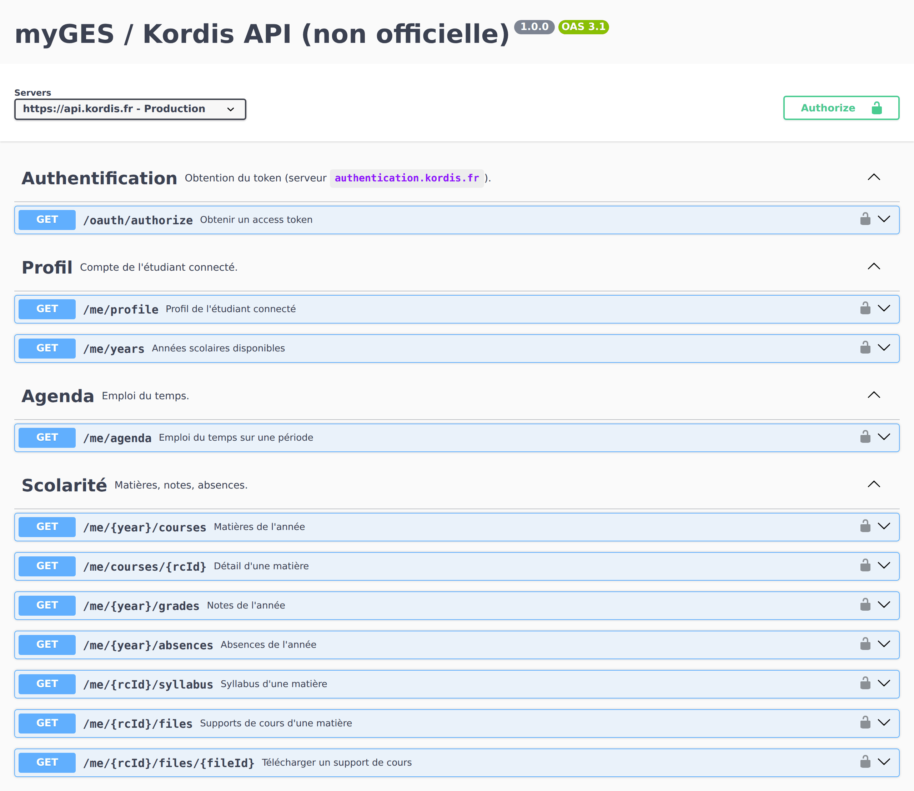

myGES dans ton terminal
Emploi du temps, notes, supports de cours en un clic, alertes sur ton téléphone et agenda Google Calendar toujours à jour. Un outil libre pour les étudiants de l'ESGI et des autres écoles du Réseau GES qui utilisent myGES.
Projet non officiel, sans lien avec Kordis ni le Réseau GES.
Ce que ça fait
Emploi du temps
Prochain cours, salle et intervenant ; la semaine ; export iCalendar.
Supports de cours
Tous les supports téléchargés d'un coup, rangés par matière ; seuls les nouveaux ensuite.
Alertes
Nouveau support en moins de 5 minutes, nouvelle note, cours annulé : sur ntfy, Discord ou par e-mail.
Google Calendar
Un agenda tenu à jour tout seul : cours ajoutés, déplacés, annulés.
Événements
Inscription à la seconde où elles ouvrent ; description et intervenants.
Notes et blocs
Moyennes par bloc de compétences et simulation : « et si j'avais 15 ? ».
Installation
sudo apt install pipx && pipx ensurepath # puis ouvrir un nouveau terminal
pipx install "myges-api[cli] @ https://github.com/Arnaudmyges/myges-api/archive/refs/heads/main.zip"
myges loginmacOS, Windows (WSL) : voir le guide d'installation.
myges next # ton prochain cours
myges grades # tes notes
myges files --download # tous les supports de cours
myges --help # tout le resteLa documentation de l'API myGES
myGES s'appuie sur une API REST (api.kordis.fr) que ni Kordis ni le Réseau GES
ne documentent. Ce projet en publie une spécification OpenAPI 3.1 complète :
33 opérations vérifiées sur l'API réelle, dont des routes absentes des autres projets
(supports de cours, syllabus, inscription aux événements).

Swagger UI · Redoc · spécification OpenAPI · bibliothèque Python
Questions fréquentes
Comment exporter son emploi du temps myGES vers Google Calendar ?
myges gcal sync tient un agenda Google Calendar à jour tout seul. Pour un export ponctuel vers n'importe quel agenda : myges agenda --ics cours.ics. Guide Google Calendar.
Comment télécharger tous les supports de cours myGES d'un coup ?
myges files --download crée un dossier par matière. Relancer la commande ne récupère que les nouveaux supports.
Comment être prévenu d'une nouvelle note ou d'un nouveau support myGES ?
myges notify add ntfy (ou Discord, e-mail) puis myges watch --install. Guide des alertes.
Comment s'inscrire à un événement myGES dès l'ouverture des inscriptions ?
myges events subscribe 4525, où 4525 est le nombre à la fin de l'adresse de l'événement. L'inscription part à la seconde où elles ouvrent.
Mon mot de passe myGES est-il en sécurité ?
Il n'est envoyé qu'au serveur d'authentification de myGES (Kordis). Ta machine garde la session (un jeton valable ~6 jours), et le mot de passe seulement si tu le demandes, dans des fichiers lisibles par toi seul. Le code est ouvert.